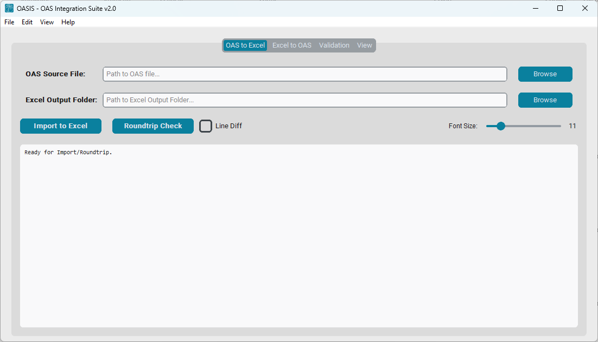
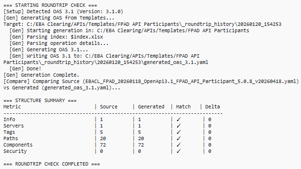
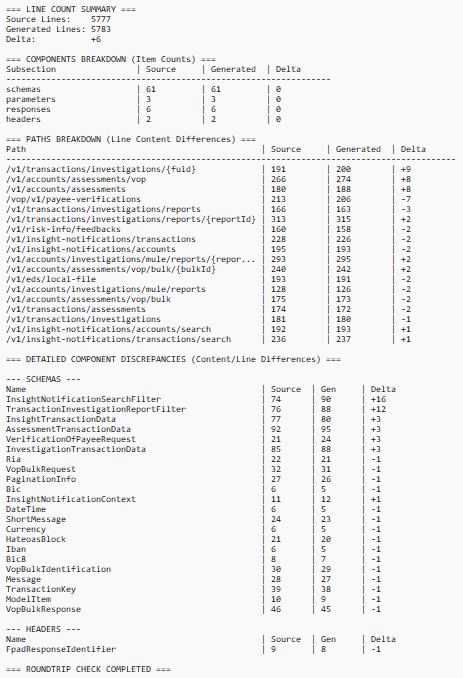
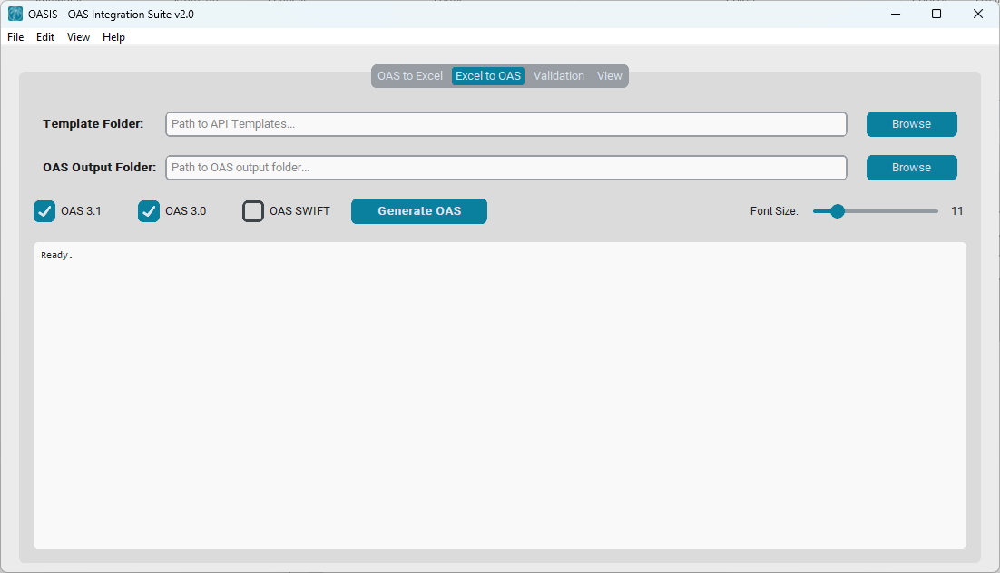
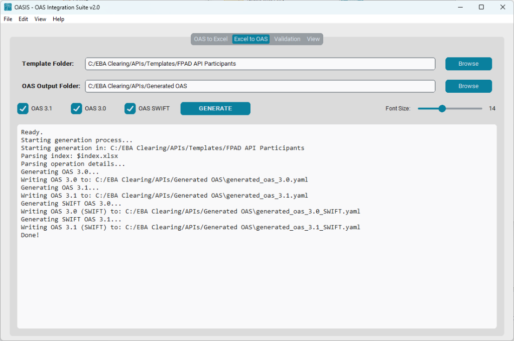
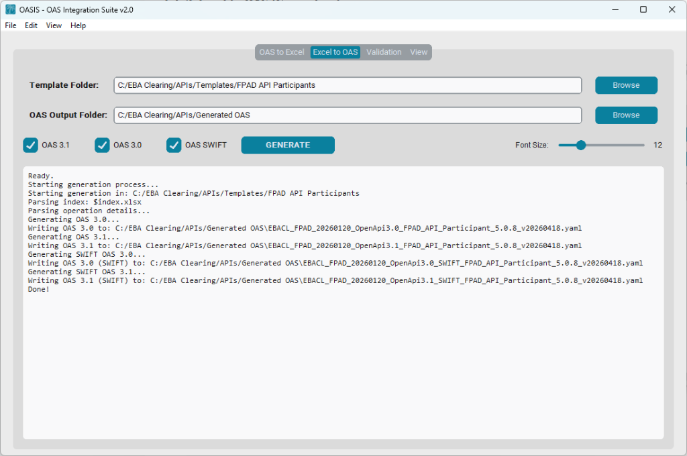
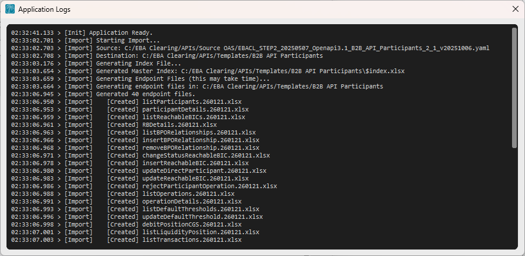

ASIS
OAS Integration Suite
Official User Guide v2.0
OASIS adopts an "Excel First" approach to API design.
It democratizes API specification by treating Excel templates as the "Source of Truth",
enabling Functional Analysts to define properties, endpoints, and validation logic
without managing complex YAML files directly.
Use the OAS to Excel tab to reverse-engineer existing JSON/YAML specifications into editable Excel templates. This is typically done once to initialize the project.
Analysts work exclusively in the Excel templates. You add endpoints, modify schemas, and define validations using familiar spreadsheet columns.
Use the Excel to OAS tab to compile your Excel work into validated, standards-compliant OAS 3.0 and 3.1 specifications.
Used for migrating legacy specs to the OASIS format.
$index.xlsx (global metadata) and individual endpoint files.
The internal log area in this tab provides detailed feedback during operations.
Tracks file generation:

The Roundtrip Check compiles your newly created Excel templates back into a temporary OAS file and compares it against your original source to ensure "Lossless Migration".
1. Standard (Structure Only):
Compacts validation into a clean summary table.
2. Forensic (Line Diff Enabled):
Expands to show detailed line-by-line comparison and per-component breakdown.
The main engine for compiling your work.
$index.xlsx and endpoint
`.xlsx` files.OAS 3.1 / OAS 3.0: Multi-select. Choose one or both
versions. If both are selected, the tool generates two separate specification files
simultaneously.OAS SWIFT: Generates additional OAS outputs specifically
customized
for SWIFT integration. These files include the metadata x-info-customization: SWIFT
in the Info section, alongside your standard 3.0/3.1 files.The console provides real-time feedback on the generation process, including confirmation of specific version outputs (3.0, 3.1, SWIFT).
You can customize the naming convention of the generated files by defining a filename pattern in
the General Description sheet of your $index.xlsx.
Supported placeholders (enclosed in angle brackets):
<current_date>: The current date (Format: YYYYMMDD).<oas_version>: Returns "3.0" or "3.1".<customization>: Returns "_SWIFT" (if SWIFT OAS is generated) or an empty string.
<api_version>: Taken from the info version field (e.g., "5.0.8").<release>: Taken from the release field (e.g., "v20260418").Example Output:
Post-generation quality assurance.
When checked, the validator skips errors in examples named Bad Request.
Context: These examples are intentionally malformed to support the API
Developer Portal Playground (simulating 400 responses). Enabling this option prevents
them from being flagged as semantic errors.

An interactive visual breakdown of validation results.
A detailed, clickable card list of all findings.
A collapsible section at the bottom showing the raw JSON output from the Spectral linter process. Useful for debugging configuration issues or "Spectral not found" errors.

Technical inspection and final preview.

operationId).
Renders your API as a professional HTML page using Redocly.
.html file.
By default, the viewer is Docked to the right. You can disable this permanently in Preferences, or temporarily by clicking the Undock button.
OASIS supports "Custom Metadata Extensions" to provide additional context for humans or applications (like Developer Portals) that isn't covered by the standard OAS specification.
| Extension | Description | Usage |
|---|---|---|
x-sandbox-* |
Playground Metadata. Family of extensions used by the API Developer Portal to generate simulated responses in the API Playground. | Defined in Excel via indented blocks. |
x-info-* |
General Metadata. Family of extensions containing release tracking info, creation date, and versioning details. | Auto-generated by OASIS during compilation. |
x-comment |
Analyst Comments. Propagates descriptions or notes from Excel references that override the standard definition. | Auto-generated when a Reference in Excel has a custom Description. |
The Preferences window allows you to customize the application's behavior and appearance. You can access it via Edit > Preferences.

Available options:
Accessible via View > Application Logs, this detached window provides a comprehensive timeline of all application activities.
Features:
HH:MM:SS.mmm).